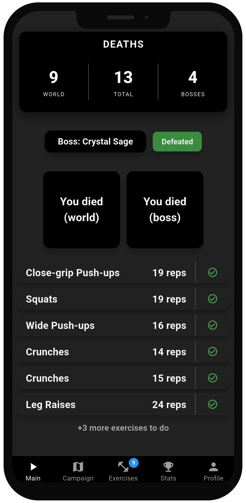

Fit Souls: Game Workout turns your Soulsborne experience into a real-world training routine. Log every death from Dark Souls I–III and Elden Ring, and each mistake becomes an exercise you have to do. The app also includes a full campaign mode with 140+ tasks for Dark Souls I, featuring location-based challenges, special conditions, lore tasks, and boss-specific objectives. The format and type of exercises are determined by what caused the death: a specific enemy, an unresolved objective, or a hostile environment. You will choose between 2 difficulty modes: Normal Mode - explore freely, complete optional tasks, uncover lore, and perform exercises tied to in-game actions and events. Extreme Mode - follow a strict, sequential path with unfair restrictions and intensified workouts - designed to make you struggle just as much as the game itself.
Key Features
- Log deaths and wins across all Dark Souls games and Elden Ring
- Full campaign available for Dark Souls I with 140+ location and boss challenges for each difficulty
- Exercise penalties for deaths, rewards (lore hints, secret and hints) for success
- You control the intensity — understand your limits and train safely